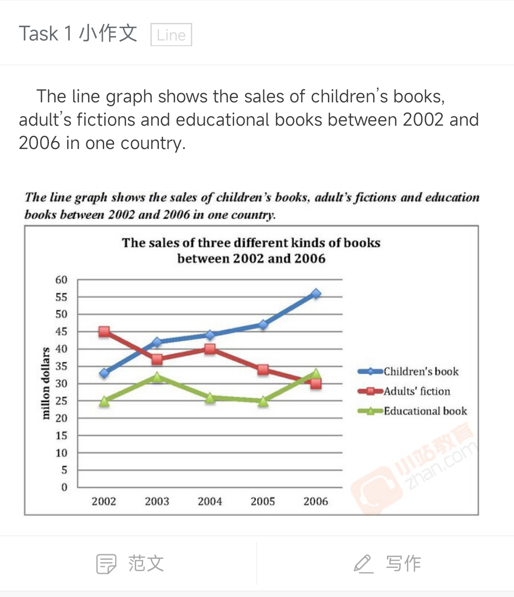

Line graph 0612
 The line graph illustrates the domestic sales of three different types of books during a 4-year span from 2002 to 2006 within a country.
These four years have seen a considerable rise in the sales number of children's books and meanwhile, a drop of similar scale in that of adult's fictions. The sales figure of adult's fictions, which once was the top of all 3 types back in 2002, was taken over by that of children's book and educational books respectively in 2003 and 2006, making itself the bottom in the end.
In 2002, adult's fiction was the best-seller with a sales number up to 45 million dollars, while none of the numbers of other two types reached 35 million dollars. That situation changed, though, in 2003, when the sales number of children's books took over the top position of adult's fiction by an advantage of around 5 million dollars, and remained the top for the following 3 years during which its sales number kept roaring and exceeded 55 million dollars in 2006. Meanwhile, the sales number of adult's fictions saw a consistent decline through the 4 years, from 45 million dollars in 2002 to 30 million dollars in 2006, except for the slight rise of about 4 million dollars in 2004 which failed to revert the falling trend.
The sales number of educational book remains stable comparing to the other two types which both have a noticable trend. In 2002, 2004 and 2005, the sales figure of educational book was about 25 million dollars, which seems to be a common case. However, in 2006, this number saw a rise of about 8 million dollars, which enabled educational books to take over the second place formerly belongs to adult's fictions by a small gap of no more than 3 million dollars. For educational books, however, rise of this scale was once seen in 2003, when the number dropped back to basic line in 2004 immediately.